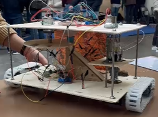

Projeto Integrador 1
Controlo Analógico
Unidade curricular
Projeto Integrador em EEIC 1
Ano
3.º ano, 1.º semestre · 2024/25
Equipa
4 elementos e orientador

O AGROBOT: plataforma sobre lagartas, com broca e dispensador de sementes.
O AGROBOT é um robô agrícola de pequena escala que automatiza a sementeira. Desloca-se em linha reta, para, perfura o solo com uma broca, deixa cair uma semente, e um ancinho traseiro tapa o buraco. Depois recomeça o ciclo.
A ideia partiu de um problema real: a agricultura de pequena escala continua dependente de mão de obra para tarefas repetitivas como plantar sementes uma a uma. O objetivo era construir algo funcional e acessível a quem tem um jardim, e não apenas a grandes explorações.
A restrição que define este projeto: o controlo tinha de ser analógico. Sem microcontrolador, sem software. A sequência de estados do robô — andar, descer a broca, subir a broca, semear, repetir — teve de ser construída inteiramente com temporizadores, portas lógicas e interruptores de fim de curso.